Die Eigenschaften der unterschiedlichen Arten von Kopfschutz ergeben sich durch deren Einsatzbereiche, den damit verbundenen Einsatz- und Umgebungsbedingungen und den ausgeführten Aktivitäten beziehungsweise Tätigkeiten. Die einzelnen Normen im Bereich des Kopfschutzes bilden die Anforderungen für die jeweiligen Einsatzbereiche und Aktivitäten ab und stellen die Grundlage für die jeweilige Art des Kopfschutzes dar.
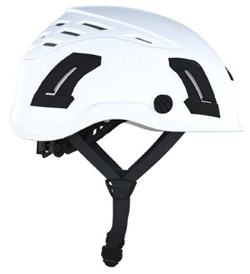
Abb. 2a Industrieschutzhelm
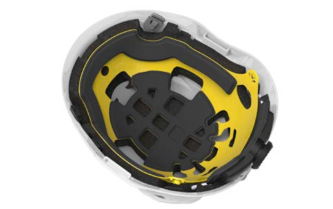
Abb. 2b Innenausstattung mit einer stoßdämpfenden Schaumstoffschale
Industrieschutzhelme sind eine Art des Kopfschutzes, die aufgrund der in der Norm vorgegebenen Stoßdämpfung und Durchdringungsfestigkeit den Kopf vor allem vor Gefährdungen durch
schützen.
Diese schützenden Eigenschaften können Industrieschutzhelme bei unterschiedlichen Einsatzbedingungen erfüllen, wie beispielsweise:
Darüber hinaus können Industrieschutzhelme über weitere, geprüfte Eigenschaften verfügen, die Schutz vor folgenden Gefährdungen bieten:
Unabhängig von der Norm können Industrieschutzhelme auch einen gewissen Schutz vor folgenden Gefährdungen bieten:
Der Kinnriemen muss eine Kraft von mindestens 150 Newton (N) aufnehmen können, bevor die Befestigung nachgibt. Spätestens ab einer Kraft von 250 N muss die Kinnriemenbefestigung nachgeben.
Die Norm schreibt nicht vor, dass der Helm mit Kinnriemen ausgeliefert werden muss.
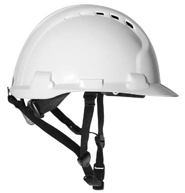
Abb. 3a Hochleistungs-Industrieschutzhelm
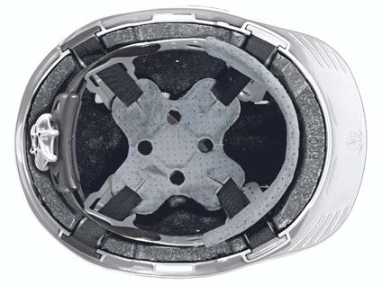
Abb. 3b kombinierte Innenausstattung mit Stoßdämpfungsbändern und Innenschale aus Schaumstoff
Hochleistungs-Industrieschutzhelme sind eine Art des Kopfschutzes, die höhere Anforderungen als Industrieschutzhelme hinsichtlich der Stoßdämpfung erfüllen und deren Stoßdämpfungs- und Durchdringungseigenschaften nicht nur im Scheitelbereich, sondern auch an den Seiten des Helms geprüft werden.
Hochleistungs-Industrieschutzhelme schützen den Kopf vor Gefährdungen durch:
Diese Eigenschaften können Hochleistungs-Industrieschutzhelme mit entsprechender Prüfung bei unterschiedlichen Einsatzbedingungen erfüllen, wie beispielsweise:
Darüber hinaus können Hochleistungs-Industrieschutzhelme über weitere, geprüfte Eigenschaften verfügen, die Schutz vor folgenden Gefährdungen bieten:
Aufgrund der seitlichen Stoßdämpfungseigenschaften bieten Hochleistungs-Industrieschutzhelme, die mit einem 3- oder 4-Punkt-Kinnriemen ausgestattet sind, einen gewissen Schutz vor Gefährdungen durch Absturz oder Sturz (Kap. 8: "Empfehlung bei einer Gefährdung durch Absturz"). Darüber hinaus bieten sie auch einen gewissen Schutz vor Gefährdungen durch UV-Strahlung und Witterungseinflüssen.
Das Befestigungssystem mit Kinnriemen muss den Kiefer, wie bei den Industrieschutzhelmen, bei einer Kraft von mindestens 150 N und höchstens 250 N freigeben. Die Norm schreibt nicht vor, dass der Helm mit einem Kinnriemen ausgeliefert werden muss.
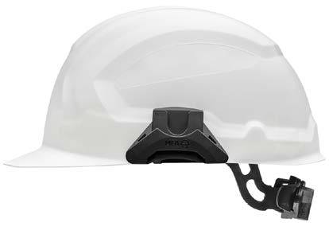
Abb. 4a Elektrisch isolierender Helm nach DIN EN 50365:2002-11
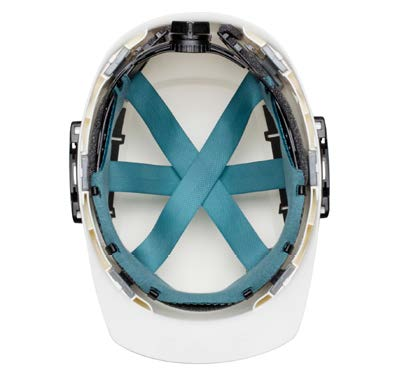
Abb. 4b Innenausstattung mit Stoßdämpfungsbändern
Elektrisch isolierende Helme sind eine Art des Kopfschutzes, die für den Einsatz in industriellen Bereichen zum einen die verbindlichen Anforderungen der Normen für Industrieschutzhelme oder Hochleistungs-Industrieschutzhelme und zum anderen die elektrisch isolierenden Anforderungen aus der Norm für elektrisch isolierende Helme erfüllen müssen. Durch diese Kombination bieten sie Schutz vor mechanischen und thermischen Gefährdungen – entsprechend der Kapitel 4.1 oder 4.2. Eine elektrische Gefährdung kann unter anderem bei Arbeiten unter Spannung oder in der Nähe unter Spannung stehender Teile bestehen und zu einer gefährlichen Körperdurchströmung durch den Kopf führen. Elektrisch isolierende Helme bieten entsprechenden Schutz vor einer solchen Körperdurchströmung – in Abhängigkeit von der Spannungsart, entweder Wechselspannung (AC) oder Gleichspannung (DC) und der Höhe der Nennspannung der elektrischen Anlage.
Elektrisch isolierende Helme werden in folgende elektrische Klassen eingeteilt:
Elektrisch isolierende Helme sind somit – je nach gewählter elektrischer Klasse – für Arbeiten unter Spannung oder in der Nähe unter Spannung stehender Teile, mit einer Nennspannung bis 17000 Volt in Wechselspannungsnetzen (AC) und bis 1500 Volt in Gleichspannungsnetzen (DC), geeignet.
Die Norm beinhaltet keine Anforderungen hinsichtlich der Gefährdung durch Störlichtbögen. Ist mit einer schädigenden thermischen Einwirkung durch Störlichtbögen zu rechnen, gibt die DGUV Information 203-077 "Thermische Gefährdung durch Störlichtbögen" Hilfestellung bei der Auswahl der persönlichen Schutzausrüstungen.
Die Kennzeichnung der Helme erfolgt einerseits nach der Norm für Industrieschutzhelme bzw. Hochleistungs-Industrieschutzhelme und zusätzlich nach der Norm für elektrisch isolierende Helme.
Nach der Norm für elektrisch isolierende Helme muss die Kennzeichnung um folgende Angaben ergänzt werden:
|
Zusätzlich muss jeder elektrisch isolierende Helm ein Feld in der Nähe des Doppeldreiecks haben, in dem das Datum der ersten Benutzung und die Daten der wiederkehrenden Prüfungen notiert werden können. Die Gebrauchsdauer elektrisch isolierender Helme darf ab dem eingetragenen Datum der Erstbenutzung nicht mehr als fünf Jahre betragen.
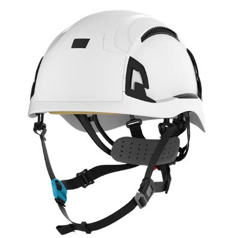
Abb. 5a Bergsteigerhelm
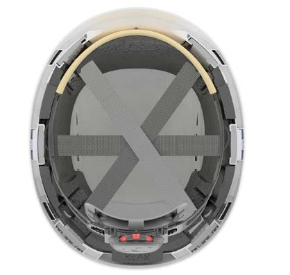
Abb. 5b Innenausstattung mit Schaumstoffschale und TragbändernInnenansicht
Bergsteigerhelme sind eine Art des Kopfschutzes, die den Kopf vor allem vor Gefährdungen durch
Aufgrund der allseitig geprüften Stoßdämpfungseigenschaften und des obligatorischen Kinnriemens, der gegenüber den Industrieschutzhelmen eine erhöhte Auslösekraft von mindestens 500 N aufweist, können Bergsteigerhelme vor gewissen Verletzungsfolgen schützen, die als Folge von Gefährdungen durch
auftreten können.
Bergsteigerhelme müssen die geforderten Schutzfunktionen hinsichtlich der Stoßdämpfung und der Durchdringung in dem Temperaturbereich von -20 °C bis + 35 °C erbringen.
Bergsteigerhelme können unabhängig von der Norm einen gewissen Schutz bei Gefährdungen durch UV-Strahlung und Witterungseinflüsse bieten.
Im Falle eines Absturzes oder eines Pendelsturzes ist der Verbleib des Schutzhelmes auf dem Kopf von zentraler Bedeutung. Daher ist bei Bergsteigerhelmen normbedingt ein Kinnriemen mit hoher Abreißfestigkeit (min. 500 N) obligatorisch.
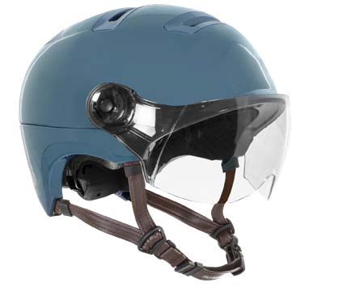
Abb. 6a Fahrradhelm – sogenannter City- oder Urban-Helm
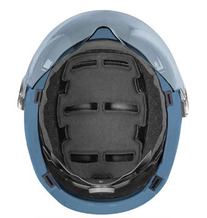
Abb. 6b Innenausstattung mit Schaumstoffschale
Fahrradhelme sind eine Art des Kopfschutzes, die den Kopf vor Verletzungen durch einen Aufprall schützen sollen. Das Risiko schwerer Kopf- und Gehirnverletzungen steigt mit zunehmender Aufprallgeschwindigkeit wesentlich an.
Um die stoßdämpfenden Eigenschaften infolge eines Aufprallereignisses möglichst realitätsnah zu prüfen, werden die Helme mitsamt Prüfkopf in unterschiedlichen Fallversuchen getestet. Die Helme werden auf einen flachen (Aufprallgeschwindigkeit ca. 19,5 km/h) und auf einen geneigten Sockel (Aufprallgeschwindigkeit ca. 16,5 km/h) fallen gelassen. Die entstehenden Beschleunigungen werden gemessen und dürfen den festgelegten Grenzwert nicht überschreiten. Fahrradhelme werden in einem Temperaturbereich von -20 °C bis + 50 °C geprüft.
Um die Schutzwirkung des Helms über die gesamte Dauer des Unfallereignisses gewährleisten zu können, ist der Verbleib des Helms auf dem Kopf von entscheidender Bedeutung. Um den Verbleib des Helms auf dem Kopf sicherzustellen, wird im Rahmen der Prüfung die Wirksamkeit der Trageeinrichtung (inklusive Kinnriemen) festgestellt.
Bei den Fahrradhelmen haben sich aufgrund der sehr unterschiedlichen Einsatzbereiche diverse Modell- bzw. Typengruppen gebildet, wie z. B. Mountainbike-Helme, City- bzw. Urban-Helme, Downhill-Helme und Rennrad-Helme. Dabei erfüllen alle Helme gleichermaßen die Norm für Fahrradhelme.
Abb. 7a Industrie-Anstoßkappe mit Aussparung für Gehörschützer im Ohrbereich
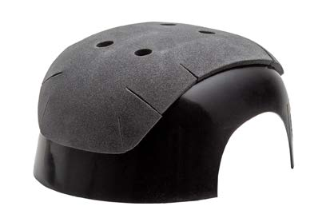
Abb. 7b Innenausstattung
Industrie-Anstoßkappen sind eine Art des Kopfschutzes, die den Kopf vor Verletzungen schützen sollen, die durch ein Anstoßen mit dem Kopf gegen harte, feststehende Gegenstände verursacht werden können.
Diese Eigenschaften können die Industrie-Anstoßkappen bei unterschiedlichen Einsatzbedingungen erfüllen, wie z. B.:
Darüber hinaus können Industrie-Anstoßkappen über weitere, geprüfte Eigenschaften verfügen, die Schutz vor folgenden Gefährdungen bieten:
Industrie-Anstoßkappen bieten keinen Schutz vor Einwirkungen durch fallende, kippende oder wegfliegende Gegenstände sowie sich bewegende hängende Lasten und können daher nicht als Ersatz für Schutzhelme zum Einsatz kommen.
Anstoßkappen können eine ähnliche Erscheinungsform wie Industrieschutzhelme, mit einer glatten Kunststoffschale und einer ähnlichen Innenausstattung, aufweisen. Sie können aber auch eine Umhüllung der Kunststoffschale aufweisen und ohne entsprechende Innenausstattung ausgeführt sein.
Anstoßkappen müssen über Vorrichtungen verfügen, die den Halt auf dem Kopf gewährleisten. Diese Forderung kann beispielsweise über ein Nackenband oder einen Kinnriemen sichergestellt werden. Häufig wird die Umhüllung der Schale mit einem elastischen hinteren Bereich versehen, der über eine Einstellvorrichtung an die Kopfgröße angepasst werden kann.